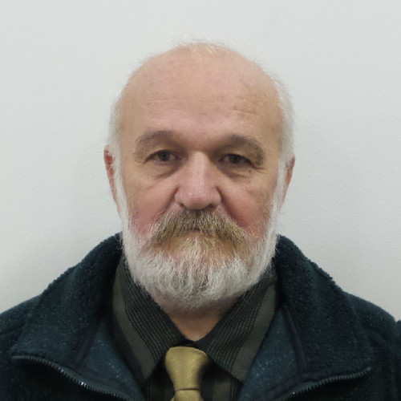

Investigating how complex systems can be classified, modeled and understood through computational, biomedical, and philosophical frameworks.

Mapping complexity across biology, medicine and science.
Biological classification, ontology, and category formation.
Causal heterogeneity and clinical decision making.
Evidence-driven medical analytics and prediction.
Genomics, evolution and large-scale biological data.
Scientific explanation, methodology and knowledge.
Formal modeling of biological complexity.
Medicine, Immunology and Virology
Computational Biology and Bioinformatics
Healthcare Analytics and Systems Modeling
Classification Theory and Philosophy of Science